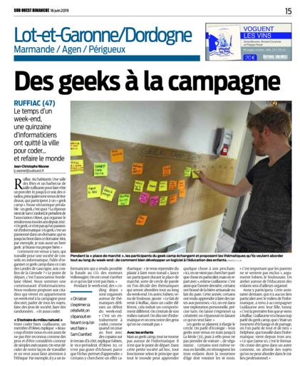

<div class="container">
    <div class="row">
        <div class="col-lg-12">
            <div class="page-header">
                <h1>Geek Camp 2019 version été indien, le rétour</h1>
                <h2>27, 28 et 29 septembre à Ruffiac 47700</h2>
            </div>
            <div class="panel panel-default">
                <div class="panel-body">
                    <h3>Un weekend entre aficionados de l'informatique, à la campagne</h3>

                    <div style="margin-top: 20px; display: flex; align-items: center;">
                        <div>Lisez l'article paru dans Sud-Ouest à propos de l'édition 2019 !</div>
                        <div style="margin-left: 30px">
                            <a href="Sud-Ouest-article-GeekCamp2019.pdf" target="_blank">
                            
                            </a>
                        </div>
                    </div>

                    <ul>Au programme:
                        <li>il n'y a pas de programme prédéfini</li>
                        <li>environnement collaboratif</li>
                        <li>partage de connaissances</li>
                        <li>du code, de la technique, du fun</li>
                        <li>grillades et sorties campagnardes</li>
                        <li>dormir à la belle étoile</li>
                    </ul>
		    <div class="well">
			<a href="https://www.meetup.com/software-craftsmanship-bdx/events/263504171/">Les inscriptions sont ouvertes</a>
		    </div>


                    <div>
                        <a href="/img/Affiche-GeekCamp2019.2.jgp">
                            
                        </a>
                    </div>
                </div>
            </div>
        </div>
    </div>
</div>
